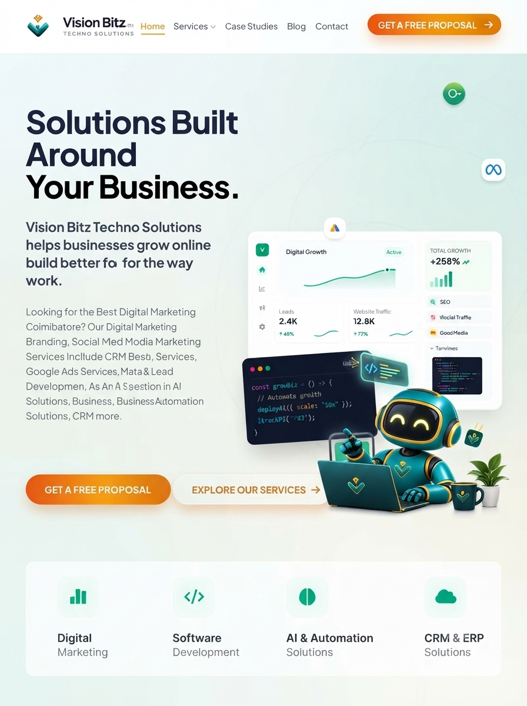
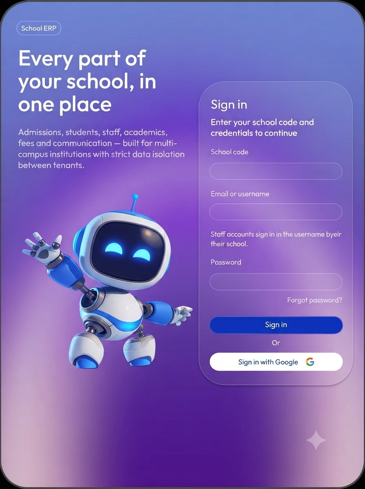
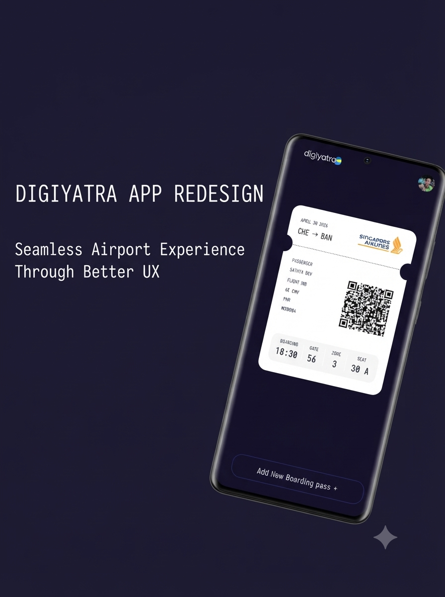
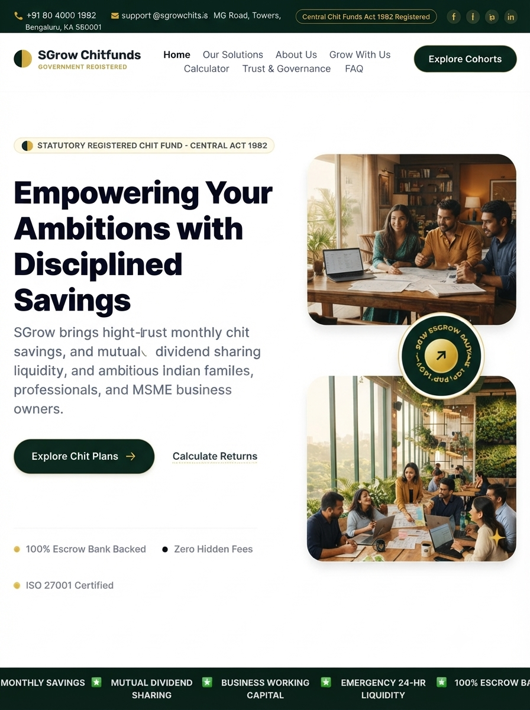
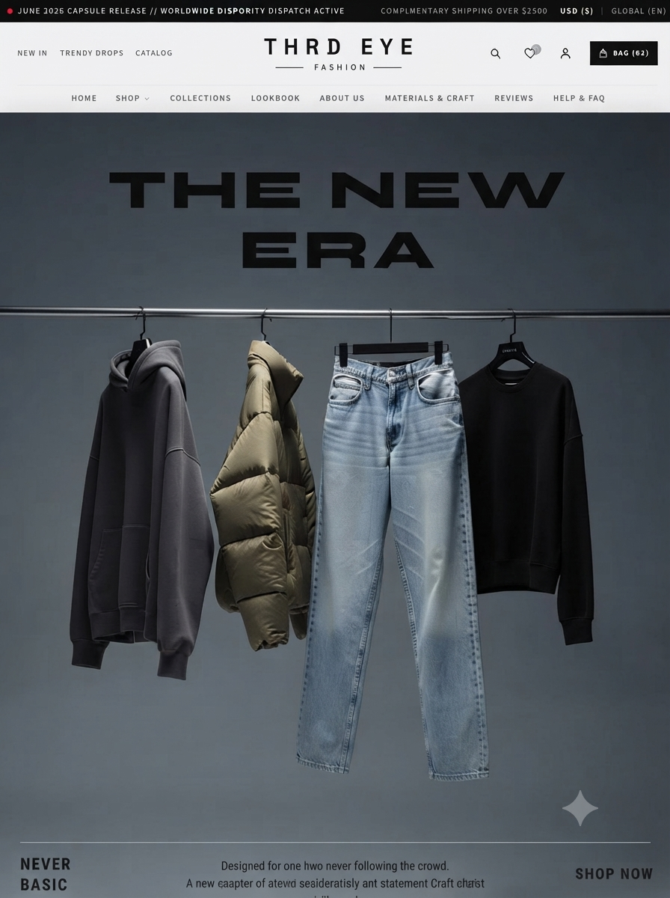
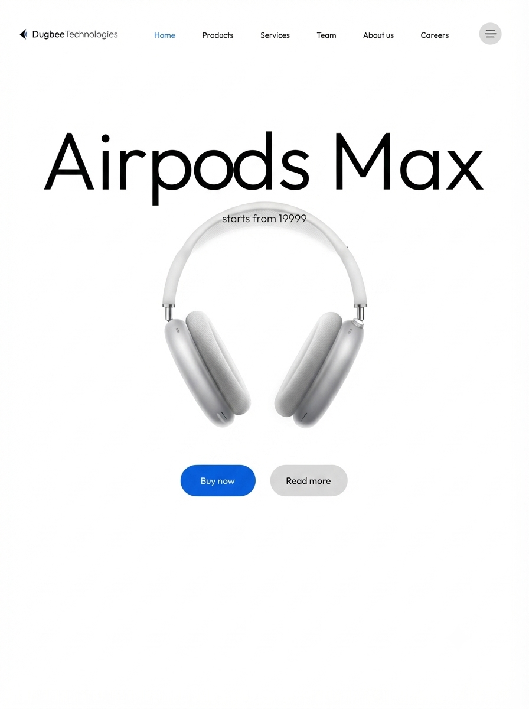
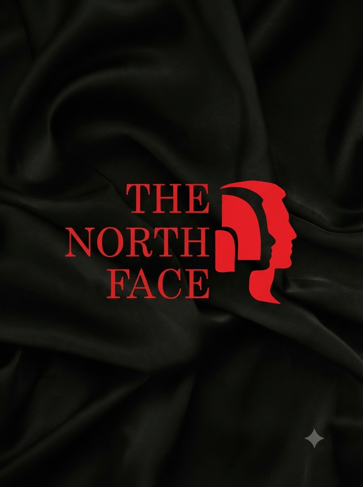

UI/UX Designer &
Product Designer
I design the moment a user stops feeling lost in your product.
Transforming complex systems, high-friction journeys, and enterprise applications into interfaces people trust and love.
Find The Friction
Research & User Journeys
Wireframe The Logic
Information Architecture
Design Systems
Figma, UI Kits & Components
Front-End & Handoff
HTML5, React & Dev Specs
Collaboration
Crafting Digital Products End-to-End
A curated selection of high-impact product designs, SaaS dashboards, mobile apps, and design systems from concept to delivery.


.png)
.png )





Selected Explorations
A collection of concept designs, UI challenges, and visual explorations created to experiment with different interaction patterns, interfaces, and design styles while continuously refining my craft.
Lead-gen sofa landing page
Hand-built with HTML, CSS and Bootstrap — a conversion-focused landing page for a furniture lead-gen funnel.
Yedzi bike site
A hand-coded marketing site exploring bold typography and product photography for a motorbike brand.
Paramount Pictures — concept site
A cinematic concept build exploring dark, high-contrast layouts and studio-style presentation.
From problem to
shipped decision
A real, repeatable sequence — not a poster. This is the order I actually move through on every project.
Find the friction
Start with a real complaint, not a brief — mine, a user's, or a stakeholder's. I write down exactly where someone gets stuck before I open Figma.
Research the gap
Competitor teardown, secondary research, existing support tickets — whatever's fastest to get real signal. I'd rather have three sharp data points than ten vague ones.
Sketch wide, then narrow
Paper first. I force myself through several structurally different layouts before touching a design tool, so the first idea isn't the only idea.
Wireframe the logic
Low-fidelity screens focused purely on hierarchy and flow — no color, no distraction — so decisions get made on structure, not polish.
Design the interface
High-fidelity UI, built as reusable components. Every screen has to justify its own existence against the friction from step one.
Pressure-test & ship
Walk it through with fresh eyes, cut what doesn't earn its place, and hand off developer-ready specs — I can build the front end myself when needed.
Tools & Skills
I Build With
Combining human-centered UX research, scalable design systems, AI tools, and front-end engineering.
UI/UX & Product Design
Design Tools & AI Workflows
Front-End Development
Professional Journey
UI/UX Designer & UI Developer Intern — Vision Bitz Techno Solutions
Served as the primary UI/UX designer & UI developer for Vision Bitz and partner company Pencilbitz. Designed three major products end-to-end in Figma: Vision Bitz 2.0 website, School ERP system, and Upzy Jobs mobile application. Created user flows, wireframes, high-fidelity prototypes, reusable design systems, and responsive layouts while utilizing AI-assisted workflows.
Freelance UI/UX Designer — Independent
Designed a complete website for a chit fund company from initial structure through final UI design. Created website layouts, navigation structures, visual hierarchy, and designed a modern thrift-inspired e-commerce dress shop.
Process Executive, Healthcare Operations — Cognizant
Processed and validated insurance claims in compliance-regulated healthcare environments. Developed deep domain knowledge in healthcare UX, enterprise applications, and clinical data-driven user experiences.
UI/UX Designer (Projects) — IDM Tech Park
Led UX activities for VETSSREACH veterinary application focusing on user experience, navigation, and usability. Conducted UX evaluations, usability testing, and redesigned DigiYatra passenger onboarding and error flows for accessibility.
B.Sc. Information Technology — Sri Ramakrishna College
Graduated with First Class (80%) in Information Technology from Sri Ramakrishna College of Arts and Science, Coimbatore. The technical foundation bridging development teams and intuitive product design.